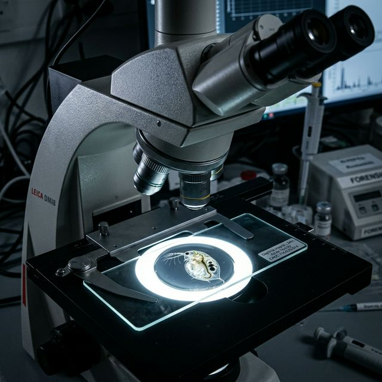
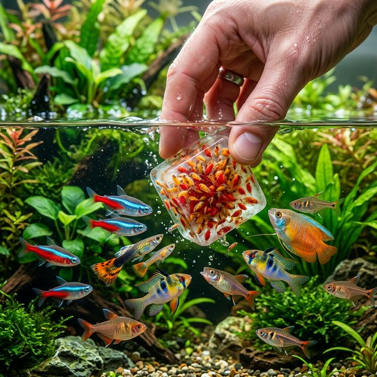

Biology & Life Cycle
Understanding how Daphnia replicate and survive is the single most important factor in running a stable culture. They are not aquarium fish — they are zooplankton engineered by evolution to exploit temporary puddles and ponds, boom explosively, then vanish into resting eggs. Managing a culture means understanding and working with these instincts.

What is Daphnia magna?
Daphnia magna is a large freshwater crustacean (cladoceran) in the family Daphniidae. At 3–5 mm when fully grown, it is the largest commonly cultured Daphnia species. It is native to the Northern Hemisphere but has been distributed worldwide. In the aquarium hobby, it is prized as a live food that triggers natural hunting behavior, delivers exceptional nutrition, and conveniently doubles as a digestive aid for constipated fish.
D. magna vs. Other Daphnia Species
| Feature | D. magna | D. moina | D. pulex |
|---|---|---|---|
| Adult Size | 3–5 mm (largest) | 0.8–1.5 mm (small) | 2–3 mm (medium) |
| Best For | Medium fish, adult bettas, discus, angelfish | Fry, nano fish, baby bettas | General use |
| Brood Interval (20°C) | Every 3–4 days | Every 1.5–2 days | Every 3–5 days |
| Max Culture Density | ~100–150/gallon before crash | Up to 19,000/gallon | Variable, lower than moina |
| Culture Difficulty | Moderate | Easy | Moderate |
| Protein (dry weight) | 45–50% | 50%+ | ~45% |
Physical Characteristics
The body is enclosed in a transparent chitinous carapace (shell). A single large compound eye is visible as a dark spot. Females carry developing eggs in a brood chamber (marsupium) on their back — when gravid, you can see a cluster of eggs or juveniles inside. Males are significantly smaller (~2 mm) and appear only when the culture is stressed.
- Neonates (just released): ~0.5 mm — too small for most fish, ideal for very small fry
- Juveniles (days 2–7): 1–2 mm — suitable for small nano fish
- Adults (day 8+): 3–5 mm — suitable for bettas, discus, angelfish, medium cichlids
The Life Cycle: Asexual Reproduction (Normal)
Under good conditions, Daphnia reproduce entirely asexually. Every individual is a female clone. She produces parthenogenetic (unfertilized) eggs that develop directly into more females without any males being involved. This is why populations can explode so rapidly — every single organism is a baby-making machine.
- Female produces a clutch of 10–100+ eggs into her brood pouch
- Eggs develop for ~3 days inside the brood chamber
- Miniature female clones are released directly into the water
- Juveniles reach reproductive maturity in 5–10 days (temperature dependent)
- The cycle repeats every 3–4 days at 20°C
Reproduction Rate by Temperature
| Temperature | Days to Maturity | Brood Interval | Lifespan | Notes |
|---|---|---|---|---|
| 10°C / 50°F | ~21 days | Every 7–8 days | ~120 days | Survival only; very slow |
| 15°C / 59°F | ~14 days | Every 5–6 days | ~95 days | Slow but stable |
| 18–22°C / 64–72°F | 7–10 days | Every 3–4 days | 70–80 days | ✅ OPTIMAL RANGE |
| 25°C / 77°F | 5–7 days | Every 2–3 days | ~40 days | Fast but shorter lives |
| 28°C / 82°F | Variable | 1–2 days | ~30 days | Stress zone; watch closely |
| 29°C+ / 84°F+ | N/A | N/A | <5 days | ⚠️ LETHAL — all die within 5 days |
The Life Cycle: Sexual Reproduction & Resting Eggs (Stress Response)
When conditions deteriorate, Daphnia shift to sexual reproduction. Males suddenly appear in the population. Females produce fertilized eggs that are encased in a hardened saddle-shaped shell called an ephippium. Each ephippium contains 2 resting eggs that can survive years of freezing, drying, and dormancy.
Ephippia triggers (in order of importance):
- Overcrowding — the #1 trigger in captive cultures
- Food scarcity (starvation)
- Temperature extremes (too hot or too cold)
- Shortened photoperiod (fewer hours of light)
- Low dissolved oxygen
- Poor water quality accumulation
Expert Population Dynamics & Density Effects
Wild Daphnia populations can vary by over 7 orders of magnitude within a single growing season — from billions at peak to near-zero in autumn. This extreme boom-bust pattern is what you are fighting against in a culture.
Density-dependent inhibition begins to suppress egg production in D. magna at densities as low as 95–115 mature individuals per gallon — even when food is abundant. Chemical signals released by the daphnia themselves (crowding pheromones) trigger this suppression. This is why regular harvesting is not just about taking food for fish — it is the primary mechanism preventing a culture crash.
Contrast this with D. moina, which can sustain densities of 19,000/gallon before showing severe inhibition. This 600× difference in carrying capacity is why D. moina is vastly more productive per unit volume, though D. magna produces larger organisms more suitable for adult fish.
Practical implication: For D. magna, keep populations below ~80–100 individuals per gallon. Harvest regularly. Run water changes to dilute chemical crowding signals even when the water looks clean.
Nutritional Profile as Fish Food
| Nutrient | Amount (dry weight) | Notes |
|---|---|---|
| Protein | 45–70% | Complete amino acid profile; excellent for fish conditioning |
| Fat (Lipids) | 11–27% | Includes essential omega-3 and omega-6 fatty acids |
| Ash (Minerals) | 15–20% | Calcium, phosphorus, iron, zinc |
| Chitin (fiber) | Part of exoskeleton | Acts as digestive roughage — the "fish laxative" effect |
| Carotenoids | Varies with diet | Enhanced by algae-based feeding; improves fish coloration |
Live Daphnia trigger the predatory feeding response in fish far more effectively than frozen or dried alternatives. Even picky fish that ignore flakes will eagerly chase live Daphnia. The combination of movement, live nutritional enzymes, and the chitinous exoskeleton makes it one of the most complete live foods available for freshwater fish.
Critical Sensitivities at a Glance
| Substance | Danger Level | LC50 / Threshold | Action Required |
|---|---|---|---|
| Chlorine / Chloramine | 🔴 CRITICAL | 0.018 mg/L (48-hr LC50) | Dechlorinate ALL tap water before use |
| Copper | 🔴 HIGH | >40 µg/L causes death | No brass fittings, no algaecides, no copper medications |
| Temperature >29°C | 🟡 LETHAL | 29°C / 84°F = 5-day survival | Keep culture below 27°C at all times |
| Pesticides | 🟡 HIGH | Varies by compound | Keep cultures away from treated gardens and pesticide spray |
| Rapid hardness change | ⚪ MODERATE | Sudden shift to 600 mg/L CaCO₃ = 98% mortality | Adjust water chemistry gradually, never suddenly |
| pH extremes | ⚪ MODERATE | Below 5.5 or above 9.5 | Maintain pH 6.5–8.5 |
Containers, Scaling & Setup
Daphnia can be raised in a mason jar on your windowsill or in a 300-gallon stock tank in a greenhouse. The principles are the same regardless of scale — but the equipment, yields, and maintenance demands change dramatically. Choose your scale based on how many fish you are feeding and how much time you can commit.

Nano Setup (≤ 1 Gallon / ≈ 4 Liters)
Best containers: Mason jars (quart or half-gallon), deli containers, small plastic bins, repurposed food jars. Wide mouths preferred for oxygen exchange and harvest access.
- Aeration: Not strictly required — daily water changes can substitute. If using air, tie a knot in airline tubing to reduce bubble flow to just a few bubbles per second. Avoid fine air stones — tiny bubbles lodge in the carapace and kill daphnia.
- Lighting: Indirect natural window light is sufficient. 12 hours on / 12 off is ideal. No special grow lights needed at this scale.
- Starter culture: 50–100 individuals
- Water changes: 25–30% every 2–3 days
- Feeding: 1–2 drops of spirulina slurry or a few grains of yeast in water, daily
✅ Best for: Beginners learning the basics, backup/emergency cultures, solo betta owners
❌ Cons: Highly unstable, very sensitive to overfeeding and temperature, crashes quickly if neglected even a few days
Small Setup (1–5 Gallons / 4–19 Liters)
Best containers: 5-gallon food-grade HDPE buckets (the most popular choice), small aquariums (2.5–5 gal), plastic storage bins, wide-mouth containers. The 5-gallon bucket is the community gold standard — it's cheap, inert, opaque (reduces algae on sides), and easy to harvest from.
- Aeration: Recommended. Small USB air pump with knotted airline tubing, or a coarse air stone set to gentle rolling bubbles. Avoid fine air stones entirely.
- Lighting: Natural window light (12 hrs) or a cheap CFL/LED desk lamp on a timer. No expensive aquarium lights needed.
- Starter culture: 100–200 individuals
- Water changes: 25% twice per week
- Feeding: Pinch of spirulina (~100mg) mixed in water, or 1/8 tsp dry yeast in water, every 2–3 days
✅ Best for: Single-tank hobbyists, small breeding projects, anyone starting out
❌ Cons: Still relatively sensitive; requires consistent maintenance schedule
Medium Setup (5–20 Gallons / 19–76 Liters)
Best containers: Sterilite or Rubbermaid storage bins (10–20 gal), standard aquariums (10–20 gal), stacked HDPE buckets. Wide and shallow is better than tall and narrow — more surface area means more oxygen exchange.
- Aeration: Required. Small aquarium pump (rated 20–40 gal) with coarse air stone positioned at one end. This creates a gentle current without trapping daphnia in turbulence.
- Lighting: LED strip light on a timer (12–16 hrs) positioned above the container. A cheap $10–20 LED strip is sufficient. Full-spectrum is better but not essential.
- Filtration: Optional sponge filter improves water stability and provides bacterial biomass for daphnia to eat.
- Starter culture: 200–500 individuals
- Water changes: 25% twice per week minimum; 3× per week during peak feeding seasons
✅ Best for: Intermediate hobbyists, small breeding rooms, anyone running multiple fish tanks
Large Setup (20–50 Gallons / 76–190 Liters)
Best containers: Standard aquariums (40–55 gal), large Rubbermaid storage totes (32–44 gal), food-grade HDPE barrels (30–55 gal). At this size, wide and shallow profiles outperform tall tanks — a 40-gallon breeder aquarium (48"×18"×16") is better than a 55-gallon tall (48"×12"×24").
- Aeration: Essential. Medium-capacity pump (ACO-9000 or equivalent, 20–40W). Run 2–3 coarse air stones distributed across the container for even circulation.
- Lighting: Full-length LED strip or T5/T8 fluorescent tube running the length of the tank. 12–16 hour photoperiod. Position 6–12 inches above water surface.
- Water management: 25% water change 2–3× weekly. At this volume, a dedicated harvest/siphon station makes maintenance much easier.
- Harvest method: Fine mesh net sweep, or siphon through a mesh screen during water changes to recapture daphnia.
✅ Best for: Serious breeders, dedicated live food rooms, anyone running 20+ fish tanks
Production Scale (50+ Gallons / 190+ Liters)
Best containers: Rubbermaid or Tarter stock tanks (100–300 gal), IBC totes (275 gal, food-grade), large outdoor ponds with predator screening. One aquarist sustained an entire fish room for years on four 40-gallon Rubbermaid trash cans — it works but is labor intensive.
- Aeration: High-capacity pump (50W+). Multiple air stones or diffusers distributed to prevent dead zones. Battery backup pump is strongly recommended — a power outage at this scale can crash an entire production culture overnight.
- Outdoor vs. Indoor: Outdoor setups benefit from free sunlight but require predator screening, seasonal management, and rain protection. Indoor setups offer year-round stability at higher electricity cost.
- Feeding system: Green water phytoplankton culture running in parallel is the most scalable feeding method at this size. Supplemented with spirulina and yeast as needed.
- Harvest systems: Standpipe with fine mesh screen, rotary sieve, or dedicated harvest tank with settling time. Manual net harvesting is too labor-intensive at this scale.
Expert Production Yield Formula
Expected yield: ~0.003–0.005 oz per gallon per day for D. magna (significantly lower than D. moina's 0.014–0.015 oz/gal/day). A 100-gallon culture produces roughly 0.3–0.5 oz per day, or 2–3.5 oz/week wet weight.
Food conversion ratio for rice bran feeding: approximately 1.7 kg bran → 1 kg wet daphnia biomass. For commercial-scale operations, this is the most cost-effective feeding approach.
Container Materials: Safe vs. Unsafe
| Material | Safety Rating | Notes |
|---|---|---|
| Glass (aquarium glass) | ✅ Safest | 100% inert. Ideal if budget allows. |
| HDPE #2 (food-grade) | ✅ Safe | Most buckets, totes. Use food-grade for lowest leaching risk. |
| PET #1 (clear bottles) | ✅ Acceptable | Temporary use only. 2-liter soda bottles work for green water cultures. |
| Polypropylene #5 | ⚠️ Mostly safe | Some products leach; test before committing. |
| PVC | ❌ Avoid | Plasticizers and additives are toxic to daphnia. |
| Polystyrene #6 (styrofoam) | ❌ Avoid | Leaches styrenics. Do not use. |
| Uncoated metal | ❌ Avoid | All metals leach ions. Especially avoid copper and brass. |
Lighting Guide
The most important lighting factor is photoperiod (hours of light per day), not intensity or spectrum. A 12-hour light / 12-hour dark cycle drives consistent asexual reproduction. Continuous light (24 hrs) actually reduces productivity compared to a natural cycle.
- Minimum effective: 8 hours/day
- Optimal: 12–14 hours/day on a timer
- Spectrum: Full-spectrum is best; blue wavelengths enhance offspring production. Avoid green-only light (increases mortality).
- Intensity: Not critical — indirect window light is sufficient. Expensive aquarium LEDs are overkill.
Aeration: The Golden Rule
Target: gentle rolling surface agitation. Daphnia should be able to swim freely without being pushed around. You want circulation, not a washing machine. If daphnia are constantly spinning or being swept to one end of the tank, reduce your airflow.
Redundancy: The Most Important Setup Decision
Recommended redundancy by situation:
- Feeding one tank: 1 main culture + 1 backup (5-gal bucket in a cool corner)
- Feeding a breeding room (10–20 tanks): 2–3 main cultures + 2 backups at different ages
- Large operation (50+ tanks): 4–6 production cultures, staggered start dates, dedicated backup system
Stagger your culture start dates by 2–4 weeks so they are always at different stages of their lifecycle. When one crashes, the others are in their prime.
Granular Water Chemistry
Treating your Daphnia water with aquarium-level precision is the difference between a thriving culture and a constant cycle of crashes. You don't need to test every parameter every day — but you need to understand what each one does so you can recognize and fix problems quickly.

⚡ Quick Reference: Parameter Targets
| Parameter | Optimal | Acceptable | Danger Zone |
|---|---|---|---|
| Temperature | 18–22°C / 64–72°F | 15–27°C / 59–80°F | >29°C / 84°F = lethal |
| pH | 7.5–8.0 | 6.5–8.5 | <5.5 or >9.5 |
| GH (Hardness) | 120–250 mg/L CaCO₃ | 90+ mg/L | <50 mg/L causes molting failure |
| Dissolved O₂ | >5 mg/L | >3.5 mg/L | <1 mg/L = lethal |
| Ammonia (NH₃) | 0 ppm | <0.2 ppm | >0.8 ppm inhibits feeding |
| Nitrite (NO₂) | 0 ppm | Near 0 | >6 ppm causes inactivation |
| Chlorine | 0 ppm | 0 ppm | 0.07 mg/L = 48-hr LC50 |
| Copper | 0 ppm | <0.04 mg/L | >0.04 mg/L causes mass death |
Temperature
Temperature is the single most impactful variable in your culture. It directly controls reproduction rate, lifespan, dissolved oxygen capacity, and bacterial activity. 18–22°C (64–72°F) is the sweet spot — fast enough reproduction to sustain harvesting, cool enough that daphnia live long and the water holds adequate oxygen.
- Above 25°C: reproduction accelerates but lifespan drops; above 28°C cultures crash within weeks
- Below 15°C: reproduction slows dramatically; below 10°C cultures become dormant
- Stability matters as much as absolute value — rapid swings of 3°C+ are more stressful than holding steadily at a suboptimal temperature
- Indoor cultures in climate-controlled rooms naturally stay in range for most of the year
- Summer heat is the #1 seasonal killer of cultures — move outdoor cultures indoors before any forecast above 30°C
pH
Daphnia are tolerant of a fairly wide pH range but thrive in slightly alkaline water. Hard water naturally buffers pH and keeps it stable — this is another reason why calcium-rich water is strongly preferred.
- Target pH: 7.5–8.0
- Acceptable: 6.5–8.5 (outside this, stress begins)
- The stability of pH matters more than the exact value — a steady 7.2 is better than a pH that swings between 6.8 and 8.2 daily
- If pH drops chronically (common in yeast-fed cultures), add crushed coral or cuttlebone to the bottom of the container — these dissolve slowly, releasing calcium carbonate and buffering acid buildup
Water Hardness (GH & KH)
This is the most overlooked parameter in hobbyist daphnia culture, and it is responsible for far more "mystery deaths" than most people realize. Daphnia are crustaceans — they need calcium to build and shed their exoskeleton. In soft water, they cannot molt properly and die trapped in their own shells.
- Target GH: 120–250 mg/L as CaCO₃ (roughly 7–14 dGH)
- Raising hardness naturally: Place a handful of crushed coral, crushed oyster shells, or a piece of cuttlebone in the container. These dissolve slowly and stop dissolving once pH reaches ~7.8 — they are self-regulating.
- Quick fix: Commercial GH/KH booster, Wonder Shell, or Seachem Equilibrium
- Critical warning: Never make a sudden large hardness change — exposure to 600 mg/L CaCO₃ in a single water change kills 98–100% of daphnia. Always adjust gradually.
Dissolved Oxygen
Daphnia need dissolved oxygen just like fish. At their preferred temperatures (18–22°C), well-aerated water naturally holds sufficient oxygen. Problems arise when temperatures spike in summer, populations become extremely dense, or overfeeding triggers a bacterial bloom that consumes all available oxygen overnight.
- Target: >5 mg/L dissolved oxygen
- Danger threshold: <1 mg/L (LC50 is 0.6–0.7 mg/L)
- Daphnia clustering at the surface = oxygen depletion signal — act immediately
- Always maintain gentle aeration; in summer, increase aeration as temperatures rise
- Green water cultures can experience oxygen crashes at night when algae respire instead of photosynthesize — aeration is mandatory in green water setups
🚨 Chlorine & Chloramine — The Silent Killer
Dechlorination methods (in order of reliability):
| Method | Removes Chlorine | Removes Chloramine | Time Required | Cost |
|---|---|---|---|---|
| Sodium thiosulfate drops | ✅ Yes | ✅ Yes (at 2× dose) | Immediate | Very cheap |
| Commercial dechlorinator (Seachem Prime, etc.) | ✅ Yes | ✅ Yes | Immediate | Cheap |
| Aging water 24–48 hrs (open container) | ✅ Yes | ❌ NO | 24–48 hours | Free |
| Boiling | ✅ Yes | ❌ NO | 30+ minutes | Low |
| Activated carbon filter | ✅ Yes | ⚠️ Inconsistent | Minutes to hours | Moderate |
🚨 Copper — The Other Silent Killer
Copper is extremely toxic to all invertebrates, including Daphnia. The threshold for population-level effects is only 40–60 µg/L (0.04–0.06 mg/L) — a level that can easily be present in tap water from corroding copper pipes, especially in older homes.
If you suspect copper contamination, use a copper test kit (available at aquarium stores). Solutions: RO water blended with tap water, spring water, or carbon-filtered water.
Important protection note: Both hard water and dissolved organic carbon (DOC — present in green water cultures) significantly reduce copper bioavailability. Green water cultures are naturally somewhat protected against trace copper contamination, which is another advantage of algae-based feeding.
Water Sources Compared
| Source | Rating | Pros | Cons / Requirements |
|---|---|---|---|
| Tap water (dechlorinated) | ⭐⭐⭐⭐⭐ Best | Mineral-rich, consistent, inexpensive | Must dechlorinate; test for copper if older home |
| Well water | ⭐⭐⭐⭐ Good | No chlorine/chloramine, often mineral-rich | Test for iron, hardness, heavy metals before use |
| Spring water (bottled) | ⭐⭐⭐ Good | No chlorine, consistent quality | Expensive at scale; pH and mineral content varies by brand |
| RO / distilled water alone | ❌ Do NOT use | No contaminants | Zero minerals = molting failure and death. Must blend 50/50 with tap or re-mineralize. |
| Rainwater | ⚠️ Caution | No chlorine | Often acidic; may contain atmospheric contaminants; must test and supplement minerals |
New Culture Setup: Step-by-Step Water Prep
- Collect water — use dechlorinated tap water as your default.
- Dechlorinate — add sodium thiosulfate or commercial dechlorinator. Stir. Wait 5 minutes.
- Check & adjust hardness — if your tap water is soft (<90 mg/L CaCO₃), add a small amount of crushed coral or a GH/KH booster. Let dissolve for 1 hour.
- Check pH — should read 7.0–8.5 after hardness adjustment. If below 6.5, add a small amount of crushed coral and wait.
- Temperature match — let water reach 18–22°C before adding daphnia. Cold tap water shocks them.
- Start aeration — run your airstone or pump for 30–60 minutes to oxygenate and off-gas any residual chemicals.
- Verify parameters — pH 7–8.5, temperature 18–22°C, zero chlorine. Then add daphnia.
- Feed lightly — first feeding should be very minimal. A few drops of spirulina slurry or a tiny pinch of yeast. Less is more for the first week.
Water Change Guide
Water changes serve multiple purposes: they remove metabolic waste and accumulated ammonia, dilute chemical crowding signals (a major crash trigger), replenish minerals, and prevent pH drift. Regular water changes are more important than perfect feeding.
- Small cultures (≤5 gal): 25–30% every 2–3 days
- Medium cultures (5–20 gal): 25% twice weekly minimum
- Large cultures (20+ gal): 25% twice weekly, ideally 3× weekly at peak
- How to water change without losing daphnia: Pour very slowly, or use a siphon with a fine mesh screen on the intake end. Let the culture settle for 5 minutes before removing water — daphnia will drift away from the disturbance.
- New water temperature: Must be within 2°C of the culture water. Sudden thermal shock causes stress and triggers ephippia production.
Expert The Nitrogen Cycle in Daphnia Cultures
Unlike fish tanks, daphnia cultures do not need to be "cycled" in the traditional aquarium sense. However, nitrogenous waste still accumulates and becomes toxic at elevated levels.
Key thresholds: Ammonia above 0.81 mgN-NH₃/L reduces daphnia filtration rate by 40%. Nitrite above 6 ppm causes complete inactivation. Nitrate is relatively benign below 250 mg/L at 20°C.
The most effective ammonia control in daphnia cultures is simply regular water changes combined with avoiding overfeeding. Sponge filters provide some biological filtration, but the continuous water changes in a well-managed culture are the primary control mechanism.
Green water advantage: Algae in green water cultures directly uptake ammonia and nitrite as nutrients. This is why green water cultures can tolerate heavier biological loads — the algae acts as a living biological filter. This is another reason experienced culturists prefer green water for large-scale production.
Feeding & Nutrition
Daphnia are blind filter-feeders — they cannot see or chase food. Their five pairs of thoracic limbs constantly beat, creating a current that draws water (and everything in it) into their filtering apparatus. Your job is to keep the right concentration of particles suspended in that water at all times — not too many, not too few.

Water Clarity as Your Feeding Gauge
- Water clears in <4 hours after feeding: You are underfeeding. Increase amount or frequency.
- Water clears within 12–24 hours: ✅ Perfect. The daphnia are consuming food as fast as you add it.
- Water stays cloudy for 24+ hours: You are overfeeding. Stop immediately and do a 50% water change.
- Water turns milky or smells foul: Bacterial bloom in progress — emergency water change required now.
Food Options Compared
| Food | Quality | Risk of Crash | Cost | Best For |
|---|---|---|---|---|
| Live green water (Chlorella) | ⭐⭐⭐⭐⭐ Best | Very Low (self-replenishing) | Free once cultured | All setups, highest yield |
| Spirulina powder (mixed) | ⭐⭐⭐⭐ Excellent | Low if dosed correctly | Very cheap | All setups, easiest |
| Baker's yeast (dry) | ⭐⭐⭐ Good | Moderate — rots fast if overdosed | Very cheap | All setups, most available |
| Brewer's yeast (dead cells) | ⭐⭐⭐ Good | Moderate | Cheap | Alternative to baker's yeast |
| Spirulina + Yeast combo | ⭐⭐⭐⭐⭐ Best combo | Low-moderate | Very cheap | Fastest growth rates |
| Chlorella powder | ⭐⭐⭐⭐ Excellent | Low | Cheap | Alternative to live green water |
| Rice bran (defatted) | ⭐⭐⭐ Good | Low | Bulk cheapest | Large-scale (20+ gal) only |
| Wheat germ/bran | ⭐⭐⭐ Good | Low | Cheap in bulk | Large-scale supplemental |
Baker's Yeast — The Beginner's Staple
Active dry baker's yeast (the same kind used for bread) is the most accessible, cheapest, and most forgiving food for starter cultures. It is not the most nutritious option long-term, but it will sustain a culture reliably when used correctly.
- Preparation: Mix a small amount of dry yeast in a cup of room-temperature (not hot) water to create a suspension. Add this suspension to the culture — never add dry yeast directly.
- Dosing by tank size:
| Tank Size | Yeast Amount | Frequency | Water After Feeding Should… |
|---|---|---|---|
| 1 Gallon | 2–3 grains of dry yeast in 1 tbsp water | Every 2–3 days | Cloud slightly, clear in 12–24 hrs |
| 5 Gallons | 1/16 tsp dry yeast in ½ cup water | Every 2–3 days | Cloud slightly, clear in 12–24 hrs |
| 10 Gallons | 1/8 tsp dry yeast in 1 cup water | Every 2–3 days | Cloud slightly, clear in 12–24 hrs |
| 20 Gallons | 1/4 tsp dry yeast in 2 cups water | Every 2–3 days | Cloud slightly, clear in 12–24 hrs |
Spirulina Powder — The Expert's Choice
Spirulina is a cyanobacterium (blue-green algae) sold as a health supplement in powder form. For daphnia, it provides a superior nutritional profile compared to yeast — more vitamins, antioxidants, and a more complete amino acid profile. It also enriches the daphnia themselves, which then pass these nutrients to your fish.
- Preparation (critical): Mix spirulina in water FIRST, stir vigorously, then pour into the culture. Dry powder sinks and rots on the bottom.
- Dosing: ~100mg (a small pinch — NOT a gram, not a teaspoon) per 5 gallons. This is a tiny amount. Less is more.
- Frequency: Daily or every other day once you learn your culture's consumption rate
- Gut loading: Feed spirulina 24–48 hours before harvesting daphnia for fish — the spirulina passes through to your fish, enhancing their coloration and immunity
The Winning Combination: Spirulina + Yeast
Research by experienced culturists has shown that a combination of baker's yeast + spirulina + algae grows Daphnia populations 3.7× faster than any single food source. The yeast provides quick energy and bacterial biomass; the spirulina provides long-chain fatty acids and vitamins; together they create a complete nutritional matrix.
Feeding Schedule by Season
| Season / Temperature | Feeding Frequency | Amount per Feeding | Rationale |
|---|---|---|---|
| Summer (warm room, 22–26°C) | Daily | Slightly less per feeding | High metabolic rate; culture consumes food faster |
| Spring/Fall (18–22°C) | Every 2 days | Standard dose | Optimal conditions — standard protocol |
| Winter (cool room, 15–18°C) | Every 3 days | Reduce to ~75% of standard | Slow metabolism; water stays cloudy longer |
| Heatwave (>26°C) | Every 2–3 days (reduce) | Very light | High heat = high oxygen consumption = lower tolerance for food |
Gut Loading: Making Daphnia More Nutritious for Your Fish
Gut loading means feeding daphnia nutritionally-rich foods 24–48 hours before harvesting them for your fish. What the daphnia eat, your fish eat. This is a free way to dramatically increase the nutritional value of your live food.
- For color enhancement: Feed dense spirulina slurry 24–48 hrs before harvest — carotenoids pass through to fish and deepen red, orange, and yellow pigmentation
- For omega-3 enrichment: Astaxanthin powder from Haematococcus pluvialis algae fed 48 hrs before harvest
- Visible sign of gut loading: Well-fed daphnia look darker and more opaque — their digestive tract is visible and full. This is exactly what you want to feed to your fish.
What to Never Feed Your Daphnia
- ❌ Unchlorinated tap water mixed with food — water and food both go into the culture; use only dechlorinated water for mixing
- ❌ Wild-collected algae or pond water — may contain predators (hydra, cyclops, dragonfly larvae), parasites, or toxic cyanobacteria
- ❌ More food when water is cloudy — this is the #1 crash cause, full stop
- ❌ Any medication or chemical treatment — even "invertebrate safe" products can harm daphnia
- ❌ Dry powder directly into the culture — always mix with water first
- ❌ Toxic cyanobacteria strains — some blue-green algae (Microcystis especially) produce toxins that crash cultures. Only use tested, confirmed-safe spirulina supplements.
Expert Large-Scale Feeding: Rice Bran & Wheat Germ
For cultures above 20 gallons, defatted rice bran is one of the most cost-effective feeding options. Nutritional profile: 24% crude protein, 22.8% crude fat, 9.2% crude fiber.
Dosing formula: 1 gram of rice bran per 500 individual daphnia per day. Distribute in 2–3 small feedings rather than one large dose. Food conversion ratio: approximately 1.7 kg rice bran → 1 kg wet daphnia biomass.
Combine with spirulina (50–100mg per 5 gallons) and yeast (1/8 tsp per 10 gallons) for maximum growth rates. Rice bran alone produces adequate growth but the combination significantly outperforms any single food.
Culturing Green Water (Phytoplankton)
Green water — a dense suspension of microscopic freshwater algae — is the closest thing to a "set it and forget it" feeding system for Daphnia. Unlike yeast or spirulina, live algae continuously regenerates in the culture vessel, meaning it is almost impossible to overfeed. It produces oxygen during the day, naturally reduces ammonia, and grows denser populations than any other food source.

Best Algae Species for Daphnia Cultures
| Algae Species | Rating | Notes |
|---|---|---|
| Chlorella vulgaris | ⭐⭐⭐⭐⭐ Best | Most recommended; easy to culture; very nutritious; grows reliably indoors |
| Scenedesmus dimorphus | ⭐⭐⭐⭐ Excellent | Also excellent for Daphnia; slightly larger cell size |
| Chlamydomonas reinhardtii | ⭐⭐⭐⭐ Good | Motile; stays in suspension well; very palatable |
| Ankistrodesmus | ⭐⭐⭐ Good | Common in outdoor cultures; works well |
| Microcystis (cyanobacteria) | ❌ AVOID | Toxic strain; produces microcystin which crashes Daphnia cultures. Never use wild-collected water that may contain it. |
Method 1: Passive Green Water (Beginner — Outdoor or Sunny Window)
The simplest approach: let nature do the work.
- Fill a clear container (2-liter bottle, clear bucket, or aquarium) with dechlorinated water
- Add a small amount of liquid fertilizer (1–2 drops per gallon of aquarium-safe plant fertilizer, or a tiny pinch of miracle-gro dissolved in water)
- Place in direct sunlight (south-facing window or outdoors in summer)
- Wait 3–7 days — the water will turn progressively green as algae bloom naturally
- Pour some into your Daphnia culture daily (20–30% of the Daphnia tank volume)
Method 2: Active Green Water Culture (Recommended — Controlled)
Purchase a starter culture of Chlorella or Scenedesmus from a reputable supplier. Grow it in controlled conditions, then use it to reliably feed your Daphnia. More work to set up, but far more reliable and safer than passive methods.
- Containers: 2-liter PET bottles (clear), gallon jugs, or small aquariums. Use clear containers so light penetrates fully.
- Medium: Dechlorinated water + diluted liquid plant fertilizer (Miracle-Gro, Greenwater Farm nutrient, or similar) at about 1/4 of normal plant dosing
- Aeration: Essential for active cultures. Run an air stone in each bottle to keep algae suspended and prevent settling. CO₂ injection dramatically accelerates growth (not required but speeds production).
- Lighting: This is critical for algae. T5 fluorescent or bright LED grow lights positioned close (<6 inches) to the culture for 14–16 hours/day. Algae need significantly more light than daphnia.
- Harvesting from algae culture: Pour 30–50% of the algae culture into the Daphnia tank daily or every other day. Replace with fresh fertilizer solution. Culture regenerates within 1–2 days under good light.
Lighting Requirements for Green Water Production
| Light Source | Distance from Culture | Hours/Day | Growth Rate |
|---|---|---|---|
| Indirect window light | N/A | Variable (weather-dependent) | Slow; inconsistent |
| Direct south-facing window | N/A | 6–10 hrs (seasonal) | Moderate in summer |
| T5 fluorescent grow light | 2–4 inches | 14–16 hrs | Fast; consistent |
| LED grow strip (6500K+) | 2–6 inches | 14–16 hrs | Fast; energy-efficient |
Green Water vs. Clear Water: Which is Right for You?
| Feature | Green Water Culture | Clear Water Culture (Yeast/Spirulina) |
|---|---|---|
| Overfeeding risk | ✅ Very low — algae is alive and self-replenishing | ❌ High — yeast rots quickly |
| Daphnia density | ✅ Higher — better nutrition = larger populations | ⚠️ Moderate |
| Oxygen production | ✅ Natural daytime O₂ from photosynthesis | ⚠️ Depends entirely on aeration |
| Setup complexity | ⚠️ Requires parallel algae culture setup | ✅ Simple — just buy spirulina or yeast |
| Visibility into culture | ❌ Opaque — hard to see daphnia or problems | ✅ Clear water = easy monitoring |
| Light requirements | ❌ Needs 14–16 hrs bright light for algae | ✅ Minimal light needed |
| Best for | High-production setups (10+ gal), experienced hobbyists | Beginners, small cultures, limited light |
Troubleshooting Your Green Water Culture
| Problem | Likely Cause | Fix |
|---|---|---|
| Water is yellow-green or brown, not bright green | Wrong algae species, or culture is old and crashing | Restart with fresh Chlorella starter; increase nutrients |
| Algae settles to bottom quickly | No aeration; dead culture | Add air stone; check if culture is still alive under microscope |
| Blue-green scum forming on surface | Cyanobacteria bloom (toxic) | Discard entire culture; bleach container; restart |
| Daphnia culture clears too fast | Not enough green water volume; underpowered algae production | Scale up algae production; add more lighting; use additional bottles |
| Algae culture not turning green after a week | Insufficient light; no nutrients; contamination | Move closer to light; add fertilizer; check for grazer contamination |
Expert Semi-Continuous Green Water Production
For production-scale operations, run 4–6 two-liter bottles in a rotation. Each day, harvest 50% from one bottle and replace with fresh fertilizer solution. Rotate which bottle you harvest from each day. This provides a continuous daily supply of algae while maintaining productive, never-fully-depleted cultures.
Under strong T5 fluorescent lighting (14–16 hrs), 2-liter bottles can regenerate fully in 24–36 hours after a 50% harvest. This system can supply a 20-gallon daphnia culture indefinitely with no external food purchases.
Optional enhancement: CO₂ injection at a slow rate (1 bubble per second) into algae bottles dramatically accelerates growth. Carbon is the limiting nutrient for algae in most setups. Even a simple DIY yeast-based CO₂ reactor connected to the algae bottles can 2–3× your algae production rate.
Harvesting Your Culture
Harvesting is not just about collecting food for your fish — it is a critical population management step. Overcrowded cultures stop reproducing entirely, then crash. Regular harvesting keeps population density in the productive range, dilutes chemical crowding signals, and ensures your culture remains in a constant state of explosive growth rather than plateau and collapse.

When to Harvest: Knowing Your Culture is Ready
- Minimum density before first harvest: At least 10 daphnia per 20ml sample. Take a clear glass, scoop a small amount from mid-water column, and count. If you see fewer than 10, wait another week.
- Visual cue — the swarm: When your culture is ready, you will see visible clouds of daphnia moving through the water, especially when a light is shone in from the side. This is the ideal harvest moment.
- The 25% rule: Never harvest more than 25% of the visible population in a single session. Leave at least 75% of your culture intact as breeding stock.
- After reaching minimum density: Harvest weekly or twice weekly. The act of harvesting stimulates the remaining population to reproduce faster (less competition).
Harvesting Techniques
1. Light Trapping (Most Efficient)
Daphnia are positively phototactic — they are hardwired to swim toward light. This makes mass harvesting almost effortless.
- Turn off room lights or dim them significantly
- Hold a flashlight or phone torch against the side or top of the culture vessel
- Wait 30–60 seconds — daphnia will congregate in a dense cloud near the light source
- Gently sweep your net through the concentrated cloud with slow, deliberate strokes
- Repeat 2–3 times, then allow culture to settle before harvesting more
2. Fine Mesh Net Sweeping
Use a net with mesh size between 150–500 microns. This range catches adult daphnia while allowing smaller juveniles to pass through and continue growing.
- 150–250 micron mesh: Catches juveniles + adults (use when you want all sizes, e.g. for fry)
- 500 micron mesh: Selective — catches only larger adults. Smaller daphnia escape back into the culture. Use this when feeding larger fish and want to leave juveniles to grow.
- Sweep slowly and smoothly. Rapid movements stress and damage daphnia.
3. Siphon Harvest
Place a 150-micron mesh screen over the opening of a harvest bucket or container. Siphon culture water through the screen — daphnia collect on the mesh while water drains through. Gently rinse the mesh into a container of clean water. This method works well for large cultures and doubles as a water change.
Rinsing Your Harvest
Always rinse harvested daphnia before adding them to your fish tank. Culture water contains waste metabolites, excess food particles, and bacteria that can spike ammonia in your aquarium.
- Pour harvested daphnia into a fine mesh net or coffee filter
- Gently run dechlorinated water through them for 10–15 seconds
- The daphnia will survive this brief rinse; they will not survive extended time out of water
- Immediately transfer to fish tank or a holding container with tank water
Storing Live Daphnia
| Storage Method | Duration | Notes |
|---|---|---|
| In original culture water (room temp) | 3–4 days | Best option; they continue living and can be fed to fish as-needed |
| Refrigerator (4–8°C) with water | Up to 1 week | Metabolism slows dramatically; do small water changes every 2 days; do not freeze |
| Frozen (ice cube tray) | Several months | Nutritional value mostly preserved; live movement and enzyme benefits lost; still excellent supplemental food |
🐠 How Much Daphnia to Feed Your Fish
Uneaten daphnia won't immediately crash water quality — they survive in freshwater aquariums and continue swimming. This makes daphnia more forgiving than many live foods. However, feeding appropriate quantities is still important for your culture's sustainability.
🐠 Betta Fish
🐟 Nano Fish & Killifish
🐟 Guppies & Livebearers
🐡 Discus
🐟 Angelfish
🐠 Tetras & Schooling Fish
🐟 Medium Cichlids
🐣 Fish Fry (2+ weeks old)
Size-Matching Guide
| Fish Size | Daphnia Size | Source |
|---|---|---|
| Newborn fry (0–1 week) | Not yet — use rotifers first | Rotifers are better for first-feeding fish. Micro-daphnia (<0.5mm) only if available. |
| Fry 1–3 weeks old | Juvenile daphnia (0.5–1.5mm) | D. moina adults or D. magna juveniles harvested through fine 150µm mesh |
| Small fish <1 inch | Juvenile daphnia (1–2mm) | Coarse mesh harvest that allows adults to escape |
| Medium fish 1–2.5 inches | Mix of juvenile and adult | Standard net sweep — mix of sizes is ideal |
| Fish 2.5+ inches | Adult daphnia (3–5mm) | Standard 500µm mesh — targets largest individuals |
Daphnia as a Digestive Aid (The Fish Laxative)
The chitinous exoskeleton of Daphnia acts as dietary fiber for fish, helping clear the digestive tract. Daphnia are widely recommended in the aquarium community as a treatment for constipated fish, fish with swim bladder issues related to diet, and fish prone to bloat.
- Feed live or frozen daphnia exclusively for 2–3 days to constipated fish
- Particularly effective for goldfish, bettas, and cichlids prone to overeating dry food
- A weekly daphnia feeding day as part of a varied diet prevents constipation proactively
Breeding Conditioning with Daphnia
Live foods, especially daphnia, are the most reliable way to trigger breeding behavior in most freshwater fish. The high protein content promotes gonad development in both males and females, and the hunting/feeding behavior stimulates hormonal responses associated with spawning.
Expert Nutritional Comparison: Live vs. Frozen vs. Freeze-Dried
Live daphnia: ~50% protein (dry weight), full enzymatic activity, active chitin, live movement triggers maximum predatory response. This is the gold standard.
Frozen daphnia: Similar protein (~50%), enzymes mostly destroyed, chitin intact, no live movement trigger. Still an excellent food; loses approximately 20–30% of immunostimulant compounds during freezing. Freeze in thin layers in ice cube trays for convenient daily portions.
Freeze-dried daphnia: Protein roughly preserved but fatty acids oxidize during drying. Minimal live food benefit. Use only as a convenience supplement, never as a primary food source. The nutritional gap between live and freeze-dried is significant — live culture is always superior.
Deep Analytics & Feeding Calculator
Enter your culture volume to get precise recommendations for population targets, harvest amounts, and feeding doses. All metrics update instantly.
14-Day Care Schedule Generator
Generate a personalized 14-day feeding, water change, and harvest schedule based on your setup volume.
| Date | Recommended Actions |
|---|
Advanced Diagnostic Tree
Use this interactive diagnostic tool to identify what's happening to your culture. Click the symptom that most closely matches what you're observing to get a detailed diagnosis and action plan.

Crash Reference: Symptom → Cause → Fix
Quick reference for the most common culture problems. Use this when you need an answer fast.
| What You See | Most Likely Cause | Immediate Action |
|---|---|---|
| Water milky/cloudy, won't clear for 24+ hrs | Bacterial bloom from overfeeding | Stop feeding. 50–75% emergency water change. Wait for water to clear before feeding again at 50% of previous dose. |
| Daphnia swarming at water surface | Oxygen depletion | Increase aeration immediately. Stop feeding. Do 50% water change. Check temperature — above 26°C is danger zone. |
| Daphnia turning bright red or pink | Hemoglobin production = dying of suffocation | Emergency aeration increase. Move to cooler location. Do NOT feed — metabolism consumes more O₂. |
| Daphnia turning opaque white, reproduction stops | Microsporidia / Pasteuria parasitic infection | Culture is unsalvageable. Cull immediately. Bleach and sterilize container. Restart from clean stock. |
| Population dropping with clear water, no obvious cause | Chlorine exposure OR copper contamination OR soft water molting failure | Test copper and pH/hardness. Check if last water change was dechlorinated. Add crushed coral if water is soft. |
| Males appearing in culture (small, elongated individuals) | Overcrowding, food scarcity, or temperature stress triggering sexual reproduction | Increase water changes. Increase feeding slightly. Check temperature. Harvest 20–25% of population. |
| Water turns brown, green water dying | Algae crash — overfeeding, contamination, or sudden parameter shift | 50% water change. Reduce feeding. Check parameters. Restart green water culture from scratch. |
| Fuzzy growths visible on daphnia bodies | Vorticella or other epibiont protozoans | Increase water change frequency. Add a micro-dose of green water to improve culture microbiome. |
| Small tentacled organisms on glass walls | Hydra infestation | See Pests & Predators section below. Treat with salt or mebendazole, or discard and restart. |
| Culture was thriving, then suddenly crashed after a heat wave | Thermal stress / oxygen depletion in warm water | Move culture to cool location. Increase aeration. Check if ephippia are on bottom — can restart culture. Adjust backup plan for summer. |
Pests & Predators
Uninvited guests in your culture range from mildly annoying to immediately lethal. Knowing what you are looking at determines how you respond.

| Pest | Appearance | Threat Level | Treatment |
|---|---|---|---|
| Hydra | Tiny tentacled polyps (2–15mm) attached to glass walls or substrate. Usually white, brown, or green. | 🔴 SEVERE — actively hunts and kills daphnia, especially juveniles. Will devastate a culture within 1–2 weeks. |
Option 1 (Mild): Salt treatment — add aquarium salt gradually to 2–3 g/L. Hydra are salt-sensitive; daphnia tolerate this level. Hold for 24 hrs, then do 50% water change. Option 2 (Moderate): Mebendazole (fenbendazole) — used at very low doses, appears daphnia-safe while killing hydra. Research protocol before attempting. Option 3 (Severe): Discard culture, bleach container, restart with clean stock. |
| Planaria (Flatworms) | Flat, soft-bodied worms 2–15mm, usually white or brown, crawling on glass. Arrow-shaped head visible under magnification. | 🔴 SEVERE — will eat juvenile daphnia and crash culture productivity. | Discard the culture. Bleach and sterilize the container thoroughly. Restart from verified clean stock. Planaria are very difficult to eliminate without discarding. |
| Predatory Copepods (Cyclops) | Very small crustaceans (1–2mm) moving in rapid, jerky hops. Often more visible than daphnia because they move faster. | 🔴 HIGH — eat juvenile daphnia faster than they are born. Will completely prevent culture recovery. | Discard and restart. Prevention is the only real solution — never introduce culture water from unknown sources. |
| Mosquito Larvae | Wriggling larvae hanging just below water surface. Usually arrive via adult mosquitoes laying eggs in open culture. | 🟡 MODERATE — compete for food; can colonize a daphnia-depleted culture during summer dormancy. | Cover culture with fine mesh screen to prevent oviposition. Remove visible larvae by net or turkey baster. Maintain high daphnia density (daphnia outcompete larvae for food). |
| Ostracods (Seed Shrimp) | Tiny bean-shaped crustaceans (0.5–2mm) swimming near edges. Look like tiny seeds moving through water. | ⚪ LOW — generally harmless. Can compete for food in large numbers. | Usually no action needed. If overwhelming the culture, increase water change frequency and reduce feeding to suppress their numbers. Fish eat them readily — a bonus snack. |
| Rotifers | Microscopic (invisible to naked eye). Culture water may appear more "active" under magnification. | ⚪ VERY LOW — beneficial scavengers in small numbers. Only compete with juvenile daphnia at very high densities. | No action needed in most cases. Regular water changes naturally control rotifer populations. |
Crash-Proofing Your Culture System
The goal is not to avoid every crash — it is to build a system where crashes don't end your supply. Every experienced daphnia culturer has crashed cultures. The difference between beginners who quit and experts who succeed is redundancy.

The Backup System
| Setup Size | Recommended Backups | Maintenance Level |
|---|---|---|
| 1 main culture (feeding 1 tank) | 1 spare 5-gal bucket, fed every 3–4 days | Minimal — check weekly, water change every 5 days |
| 2–3 main cultures (small breeding room) | 2 backups at different growth stages | Low — rotate through backup cultures as you harvest mains |
| 4+ main cultures (large operation) | 2–3 backups + frozen daphnia reserve + dried ephippia vial | Moderate — stagger start dates by 2–4 weeks for continuous production |
Your Emergency Crash Kit
Keep these items ready at all times so you can respond to a crash within hours, not days:
- ✅ Pre-aged, dechlorinated water (several gallons in a covered bucket)
- ✅ 2–3 clean spare containers (HDPE buckets or jars)
- ✅ Spirulina powder in a sealed jar
- ✅ Backup air pump + spare air stone + extra tubing
- ✅ Fine mesh net (for isolating survivors from a crashing culture)
- ✅ Crushed coral (small bag — for quick hardness and pH stabilization)
- ✅ Sodium thiosulfate or commercial dechlorinator
- ✅ Vial of dried ephippia from a previous culture (your final failsafe — these can restart a culture months later)
- ✅ Frozen daphnia cubes in freezer (absolute last resort food supply while cultures recover)
Seasonal Management Guide
| Season | Main Challenge | Adjustments |
|---|---|---|
| 🌸 Spring | Temperature fluctuations as seasons change | Ideal time to start new backup cultures. Increase feeding gradually as temps rise. Excellent production season. |
| ☀️ Summer | Heat waves crashing cultures; oxygen depletion | Move outdoor cultures indoors before any forecast above 28°C. Increase aeration. Reduce feeding slightly. Monitor daily during heat events. |
| 🍂 Fall | Shortening days may trigger ephippia production | Supplement with artificial lighting on a timer to maintain 12+ hrs/day. Collect ephippia from any crashing cultures as emergency stock. |
| ❄️ Winter | Low temps slow reproduction; cold shock from water changes | Match water change water temperature carefully. May need aquarium heater in very cold rooms. Reduce feeding frequency. Indoor cultures in heated rooms are largely unaffected. |
Expert The Ephippia Recovery Protocol
When a culture crashes completely, check the bottom of the container before discarding everything. Black or dark brown saddle-shaped cysts attached to dead daphnia or substrate are ephippia — viable resting eggs that can restart your culture.
Recovery procedure:
- Allow the crashed culture to dry completely in a cool, dark location (2–4 weeks)
- Store dried material in a sealed vial or small bag for up to 6 months
- When ready to restart: fill a clean container with prepared water (same parameters as normal culture)
- Add dried material including ephippia to the container
- Place under 12–16 hours of light at 18–22°C
- First hatchlings should appear within 2–7 days
- Feed very lightly until population establishes (2–3 weeks to first harvest)
Ephippia can survive freezing, drying, and dormancy for years in nature. Yours may hatch even after months of storage.